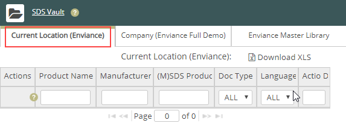
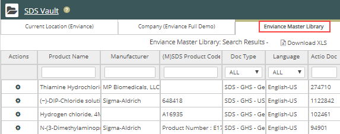
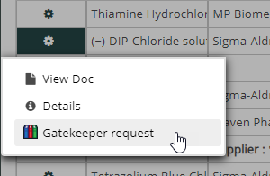

You can search for a product from the Basic Search page or the Advanced Search page. Vault displays the results in three tab:
To search for and add a product to your Vault:
In the Basic Search or the Advanced Search page, enter the product information to search for in the product fields.
Note: Quick Find does not search the Master Library.
In the following example, a basic search was performed for the term "chloride" in the Product Name field. The search results for the current location show no products:

The same search results show the Master Library contains many products with "chloride" in the product name:

Depending on your Role and the processes set up for your company, you can add the product SDS to your Vault, or enter a Gatekeeper request for the product from either the Company or Master Library tab.
Select either Add to Library to add the product SDS to your Vault (displayed if allowed).
Or Gatekeeper request to request the product through Gatekeeper:
